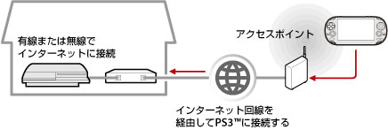

ネットワーク > リモートプレイをする（インターネット経由）
リモートプレイをする（インターネット経由）
PS VitaやPSP™でこの機能を使う場合、PS Vita、PSP™やPS3™でシステムソフトウェアのアップデートが必要になる場合があります。
PS VitaやPSP™など、リモートプレイ対応機器のワイヤレスLAN機能を使って、ホットスポットなどと呼ばれる公衆無線LANサービスのアクセスポイントに接続し、インターネット経由で自宅のPS3™に接続します。PS3™を接続待機状態にしておくことで、自宅から離れた場所や、海外からリモートプレイをすることができます。

ヒント
公衆無線LANサービスの利用方法や料金は、サービス事業者によって異なります。詳しくは、サービス事業者にお問い合わせください。
準備する（1） （PS3™とリモートプレイ対応機器）
はじめてリモートプレイをするときは、PS VitaやPSP™など、リモートプレイ対応機器をPS3™に機器登録（ペアリング）する必要があります。 （設定）＞
（設定）＞ （リモートプレイ設定）＞［機器登録］で設定してください。
（リモートプレイ設定）＞［機器登録］で設定してください。
準備する（2） （リモートプレイ対応機器）
PS VitaやPSP™など、リモートプレイ対応機器をアクセスポイントに接続するためのネットワーク接続を作成します。インターネット経由でリモートプレイをするときは、ホットスポットなどと呼ばれる公衆無線LANサービスのアクセスポイントを利用できます。リモートプレイ対応機器のネットワーク設定について詳しくは、各機器の取扱説明書などをご覧ください。
PS Vitaでリモートプレイをする
1. |
PS3™で |
|---|
 （ネットワーク）から
（ネットワーク）から （リモートプレイ）を選ぶ。
（リモートプレイ）を選ぶ。2. |
PS Vitaで、 |
|---|
 （PS3リモートプレイ）＞［はじめる］をタップする。
（PS3リモートプレイ）＞［はじめる］をタップする。3. |
［インターネット経由で接続する］をタップする。 |
|---|
ヒント
- PS Vitaのリモートプレイ中に他のアプリケーションに移動して30秒経過すると、リモートプレイの接続が切断されます。
- PS3™でお使いのSony Entertainment NetworkのアカウントをPS Vitaにも登録しておいてください。すでにPS Vitaやパソコンなどで作成したアカウントをお持ちの場合は、同じアカウントをPS3™にも登録できます。
PSP™でリモートプレイをする
1. |
PS3™で |
|---|---|
2. |
PSP™で、 |
3. |
［インターネット経由で接続する］を選ぶ。 |
4. |
接続先の一覧から、リモートプレイで使用するアクセスポイントの接続先を選ぶ。 |
5. |
PS3™で使っているSony Entertainment NetworkのサインインIDとパスワードを入力する。 |
 （リモートプレイ）を選ぶ。
（リモートプレイ）を選ぶ。インターネット経由でのリモートプレイ接続について
お使いのネットワーク機器によっては、インターネット経由でリモートプレイが成功しないことがあります。そのときは、次の情報を参考にしてください。
- （設定）＞
 （ネットワーク設定）＞［インターネット接続テスト］で、インターネットおよびPSNSMに接続できることを確認してください。
（ネットワーク設定）＞［インターネット接続テスト］で、インターネットおよびPSNSMに接続できることを確認してください。 - お使いのルーターがUPnPに対応しているときは、ルーターのUPnP機能を有効に設定してください。
- UPnPに対応していないルーターをお使いのときは、ルーターのポートフォワーディングを設定して、インターネットからPS3™への通信を許可する必要があります。リモートプレイで使用されるポート番号は、TCP : 9293です。設定方法については、ルーターの取扱説明書をご覧ください。
- ポートフォワーディングとは、特定のポート（入り口）に入ってきた信号を、指定した別のポート（出口）に通す機能です。［ポートマッピング］、［アドレス変換］などと呼ばれることもあります。
- PS3™が2台以上のルーターを経由してインターネットに接続されているときは、正しく通信できないことがあります。
ヒント
- ルーターとは、1つのインターネット回線を複数の機器で共有するための装置です。
- ルーターやインターネットサービスプロバイダーの提供するセキュリティー機能によって通信が制限される場合もあります。お使いのネットワーク機器の取扱説明書や、インターネットサービスプロバイダーの資料もあわせてご覧ください。